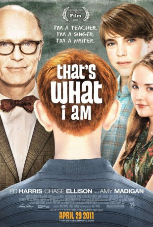

#2438 That's What I Am
 gesehen am 22.11.2015
gesehen am 22.11.2015
 
 IMDB-Wertung: 7.1 / 10
IMDB-Wertung: 7.1 / 10  Metascore: 53
Metascore: 53 
In den frühen 1960er Jahren zählt der zwölfjährige Andy zu den beliebten Schülern an seiner High School, worüber er auch heilfroh ist, da es Außenseitern wie der dicken Zahnspange oder dem Rotschopf mit den Segelohren nicht gut ergeht unter generell nicht zimperlichen Kids. Der humanistisch gesonnene Klassenlehrer Mr. Simon will dem verbreiteten "Bullying" entgegenwirken und paart für eine längere Gemeinschaftsaufgabe Andy mit dem Rotschopf. Da machen plötzlich Gerüchte in der Vorstadt die Runde, nach denen Mr. Simon homosexuell sei.
Jahr: 2011
Dauer: 101 Minuten
FSK: 6
Land: USA Studio: Samuel Goldwyn FilmsTonspuren: DD5.1 - ,
Untertitel:
Auflösung: 1080p (1920x1032) Größe: 5990 MB
Genre: Komödie, Drama
Regisseur: Michael Pavone
Drehbuch: Michael Pavone
Soundtrack: James Raymond
Darsteller:
 Ed Harris als Mr. Simon
Ed Harris als Mr. Simon- Chase Ellison als Andy Nichol
 Molly Parker als Sherri Nichol
Molly Parker als Sherri Nichol Daniel Roebuck als Jim Nichol
Daniel Roebuck als Jim Nichol- Randy Orton als Ed Freel
- Daniel Yelsky als Norman Grunmeyer
- Alexander Walters als Big G
- Mia Rose Frampton als Mary Clear
 Amy Madigan als Principal Kelner
Amy Madigan als Principal Kelner- Renwick D. Scott II als Dan Rainier
- Vanessa Cloke als Irene Freel
- Raymond Philip Michael Diamond als Myron Stort
 Joe Chrest als Mr. Clear
Joe Chrest als Mr. Clear Geraldine Singer als Mrs. Cranby
Geraldine Singer als Mrs. Cranby- Cameron Deane Stewart als Carl Freel
- Brett Lapeyrouse als Bruce Modak
- Taylor Faye Ruffin als Doris Gebben
- Sean Michael Cunningham als Jimmy Tadlock
 Stephen Apostolina als Additional Voice
Stephen Apostolina als Additional Voice Shane Baumel als Additional Voice
Shane Baumel als Additional Voice David Cowgill als Additional Voice
David Cowgill als Additional Voice Jessie Flower als Additional Voice
Jessie Flower als Additional Voice Zachary Gordon als Additional Voice
Zachary Gordon als Additional Voice Madison Pettis als Additional Voice
Madison Pettis als Additional Voice Jennessa Rose als Additional Voice
Jennessa Rose als Additional Voice Jeremy Shada als Additional Voice
Jeremy Shada als Additional Voice- Jennifer Stone als Additional Voice
 Bridger Zadina als Additional Voice
Bridger Zadina als Additional Voice Lynnanne Zager als Additional Voice
Lynnanne Zager als Additional Voice Greg Kinnear als Narrator , uncredited
Greg Kinnear als Narrator , uncredited Jay Oliver als Parent , uncredited
Jay Oliver als Parent , uncredited- Yvette Rachelle als Yvette , uncredited
- Holly Rochelle als Neighbor , uncredited
 Olga Wilhelmine als Neighbor - parent , uncredited
Olga Wilhelmine als Neighbor - parent , uncredited- Camille E. Bourgeois III als Jason Freel
- Jordan Reynolds als Ricky Brown
- Sarah Celano als Karen 'Cootie' Connor
- Dalton Mitchell als Sam Nolan
- Holly Settoon als Barbara Foss
- Alex Hardee als Stan Geyer
- Cassidy Smith als Janice Conkel
- William Faust als Band Member
- Steve Alterman als Additional Voice
- Kate Carlin als Additional Voice
- Jack Cygen als Additional Voice
 Bridget Hoffman als Additional Voice
Bridget Hoffman als Additional Voice- Melissa S. Harris als Woman Neighbor , uncredited
- Rahsaan Ison als School kid , uncredited
- Cynthia LeBlanc als School Teacher , uncredited
- Elton LeBlanc als School Teacher , uncredited
Datei: X:\2011(N-Z)\That's What I Am (2011, FSK6, 1920x1032).mkv seit 10.11.2015
Festplatte: HD 2011(G-Z)
 Es gibt insgesamt 132 Filme in der Gruppe '2011(N-Z)'
Es gibt insgesamt 132 Filme in der Gruppe '2011(N-Z)'